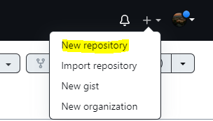
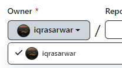
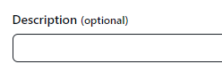
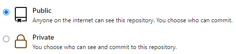
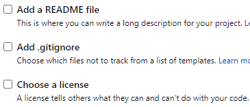
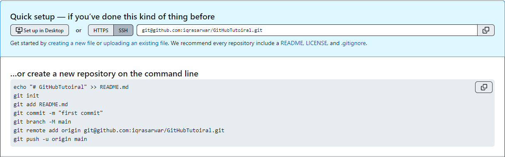

GitHub
Github is a code hosting platform with open source Version Control System. Developers can store, manage, track and control changes to their code. Developers can also collaborate on projects and contribute to other open source projects.
Wait What?
-
What is Version Control System?
Version control systems helps in recording changes made to files by keeping a track of modifications in code.With Version control system you can recall specific versions later.
-
What is open source?
Open source is source code that is made freely available for possible modification and redistribution. Products include permission to use the source code, design documents, or content of the product.
-
What is meant by collaborate and contribute?
collaboration is the practice of two or more people working together by sharing knowledge, experience and skills. while Contribution means adding,improving code, documentation, test cases etc. for open source projects.
Github: Where the world builds software
- Go to GitHub website.
- You have to Sign up by creating your account.
- Provide a valid email that is not already registered with Github.
- Create a Strong password of at least 15 characters OR at least 8 characters including a number and a lowercase letter.
- Choose a unique username that is not already taken.
- Choose if you want to listen for github news & updates or not.
Github: Where the world builds software
- solve the puzzle presented to verify your account.
- Create account if you agree with Privacy Statment and Terms & conditions.
- Enter the code sent to your email for verificaiton.
- Specify your team members if any.
- Choose if you are student or teacher.
- Specify the features you are intreseted to use.
Github Plans
Select the one that suits you at most.
-
Free
$0 /year- Unlimited public private repositories
- Automatic security & version updates
- 2,000 CI/CD minutes/month
- 500 MB of pacakages storage
- New Issues & Projects
- Community Support
-
Team - Most Popular
$40 /year- Access to GitHub Codespaces
- Protected branches
- Multiple reviewers in pull requests
- Draft pull requests
- Code owner
- 3,000CI/CD minutes/month
- 2GB of Pacakages Storage
Github Repositries
A reliable storage for your codeBase
GitHub Repositries
- A repository contains all of your project's files and each file's revision history. You can discuss and manage your project's work within the repository.
- You can own repositories individually, or you can share ownership of repositories with other people in an organization.
- You can restrict who has access to a repository by choosing the repository's visibility.
- Transfer this repository to another user or to an organization where you have the ability to create repositories.
- You can Archive repository to make it read-only for all users and indicate that it's no longer actively maintained. You can also unarchive repositories that have been archived.
Repositry Operations
- Create A New Repositry
- Create Repositry Template
- Clone A Repo
- Fork A Repo
- Transfer A Repo
- Change Visibility
- Archive A Repo
- Delete A Repo
Create A new Repositry
-
01.Create New Repo
 -
02.Give a meaningful Name

03.Switch Between Owners
 -
04.Give description if you want
05.Choose the Visibility
 -
04.Optionals
Check the files you wnat to include.

05.Create It

QuickSetup😂 - Seems Awfull!🙉
What is Git?
Breaking Down the Setup!